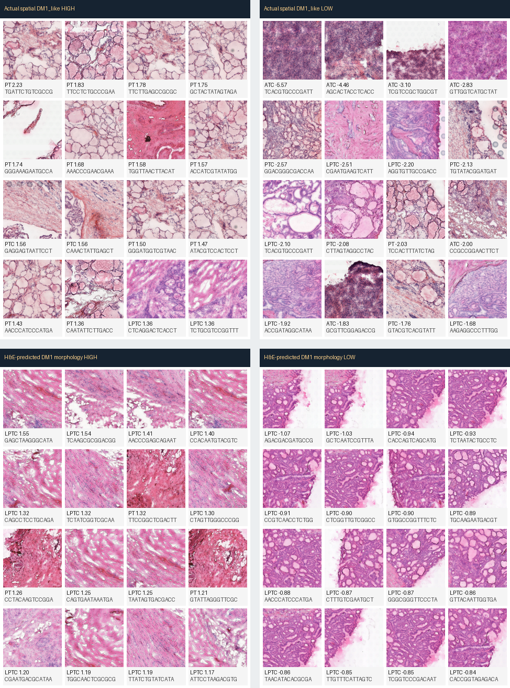

Verdict
what is actually new
Not found: a clean new TCGA slide-level image-DM1 pathology finding. Spatial-trained morphology gives TCGA DM1 vs DM2 AUC=0.550, and after TSS residualization AUC=0.503.
Found as a hypothesis: local spatial H&E morphology carries a moderate DM1/RAI/TDS-like transcriptomic tissue-state signal. The visual pattern suggests follicular/colloid and stromal/collagenized tissue composition rather than a clean tumor-cell DM1 subtype.
Evidence
numbers before interpretation
| Test | Value | Disposition |
|---|---|---|
| GSE250521 spatial H&E -> DM1_like_score, leave-slide-out | rho=0.302, p=2.5e-68 | Moderate local H&E/RNA coupling |
| Slides with per-slide rho > 0.2 | 10/16 | Visible but not headline-strong |
| TCGA DM1 vs DM2 from spatial-trained morphology | AUC=0.550 | No label transfer |
| TCGA DM1 vs DM2 after TSS residualization | AUC=0.503 | Transfer signal dies |
| UNI LOTO image score vs RNA dediff proxy | rho=0.527, p=4.2e-05 | Strong raw explanation for image score |
| Same after full residualization | rho=0.107, p=0.44 | Not independent of label/cohort metadata |
Tile Atlas
pathologist-facing hypothesis generator

Decision
how to use this
Do not turn this into a Paper 2 main claim yet. Use it as a pathologist-review packet: ask whether the atlas consistently separates colloid/follicular tissue, collagenized stroma, and compact epithelial tumor architecture. If yes, K2 H&E can validate a real tissue-state morphology axis.